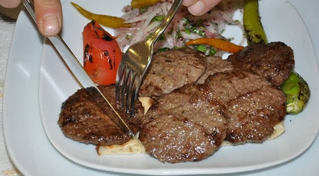
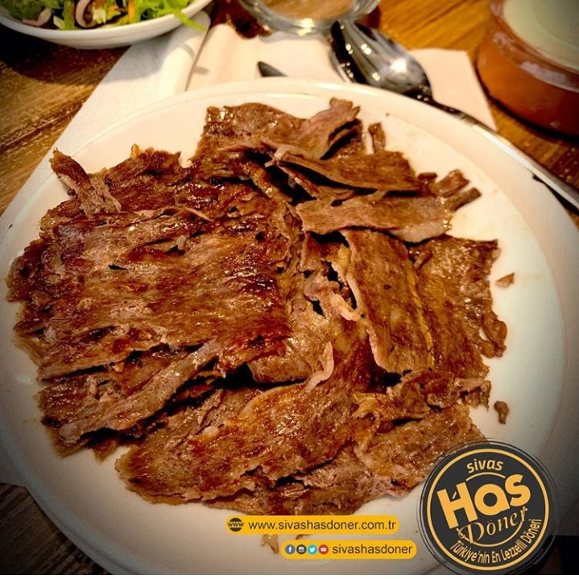
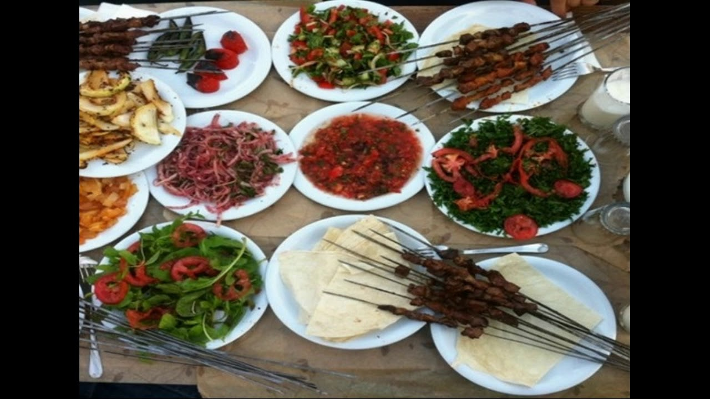

1.SCÜ Çok Amaçlı Salon'da Sivas Köftesi
Kampüs Personel Yemekhanesi 3. Kat, Merkez, Sivas
En son ne zaman Sivas Köftesi yediniz? Buraya gittiğiniz mekan ve yemek ile ilgili yorumlarınızı ekleyiniz.
Yemeği de burada tanıtabilirsiniz.
Örnek: Normal köftelerden daha geniş yapılan ve içinde baharat olmaması nedeniyle etin tadını alabildiğiniz köftelerdendir.
Asıl özelliği ise Sivas'ta yetişen hayvanlardan elde edilen etin kullanılmasıdır.
Taze otlar ve bitkilerle beslenen hayvan etinin lezzetini söylemeye gerek yoktur.
Öneri: Soğuk içeçek ile tüketiniz

2.Has Döner'de Et Porsiyon Döner
Pulur, forium AVM, Ahi Emir Cd., 58000 Merkez/Sivas
Canınız döner çektiğinde, Pulur Mahallesi'deki Vatan Bilgisayarın aşağısında yer alan Has Döner'e gidin. Döner çok güzel, yediğim en iyi dönerlerden biri.
Menü, standarttır ve menüde çok değişik bir şey yoktur ama ürünleri lezzetlidir.
Diğer bir şubesi ise Gültepe Mahallesi'ndedir ve Pulur'daki yerden daha büyüktür ama ulaşım olarak dezavantajlıdır.
Öneri: Şalgam ile tüketiniz.

3.Ciğerci Cemal Usta
Kardeşler, Eğri Köprüsü, 58070 Merkez/Sivas
Ferah ve temiz bir mekan fakat masalar birbirine yakın. Çalışanlar ilgili , lavabolar temiz. Salata ve 5 çeşit meze, taze ve gayet lezzetli.
Ciğerin yanında gelen ince lavaşlar da güzel, özellikle sıcak ve etin yağını çekenlerden isteyebilirsiniz çok leziz. Konum olarak ulaşımı kolay bir yerde.
Farklı yorum örnek: Sivas’ta lezzetli ciğer yiyebileceğiniz tek yer diyebilirim. Ciğerleri ve ikramları çok iyiydi.Bir porsiyon ciğer şişte toplam 8 şiş bulunuyor.
Porsiyonun fiyatı da 50tl. İkramlarında karışık salata,soğan salatası,cacık,patlıcan salatası,ezme,turp,turşu ve çay vardı.Favorim de patlıcan salatası ve soslu lavaşlarıydı.
Öneri: 1 Porsiyon Ciğer

4.Şifaiye Medresesi'nde Salep
Eskikale, Merkez, 58070 Sivas Merkez/Sivas
Şifaiye Medresesi, Selçuklu Dönemi'nde hastaların tedavi edildiği ve aynı zamanda tıp tahsilinin de yapıldığı en önemli medreselerden biridir.
Günümüze ulaşabilen bölümü, Anadolu'nun en büyük şifahanesidir. 1217/18 yıllarında I. İzzeddin Keykavus tarafından yaptırılmıştır.
Görkemli taç kapıdan, dört eyvanlı, revaklı avluya girilir. Taç kapıda güneş ve ay sembolleri, ana eyvanda ise kadın ve erkek başı biçiminde rölyefler yer alır.
1220'de I. İzzetttin Keykâvus'un buraya gömülmesiyle birlikte güney eyvanı türbeye dönüştürülmüştür.
Öneri: Tarçın ile tüketiniz